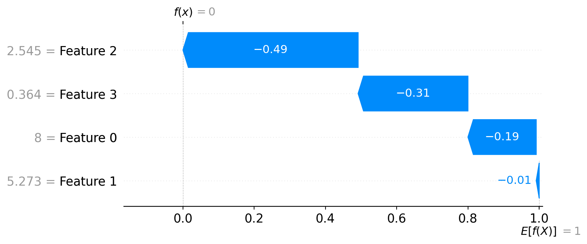

import numpy as np
from sklearn.ensemble import RandomForestClassifier
from sklearn.datasets import load_iris
np.random.seed(123)
iris = load_iris()
random_forest = RandomForestClassifier()Explaining a Random Forest
We’ll start with a super easy example, the obligatory iris dataset with a random forest classifier. Below we set up the model using scikit-learn, everything so far should look very familiar.
Since we’ll use GPT-4 for the tutorial, and because GPT-4 is very smart, it probably knows the iris dataset anyway. To trick it a little bit into thinking we have a new dataset, let’s just rename the features and “jumble” the data a bit.
feature_names = ["length of table", "width of table", "length of dresser", "width of dresser"]
class_names = ["living room", "bedroom", "dining room"]
X = iris.data * 1.8182
y = iris.target
random_forest.fit(X, y)RandomForestClassifier()In a Jupyter environment, please rerun this cell to show the HTML representation or trust the notebook.
On GitHub, the HTML representation is unable to render, please try loading this page with nbviewer.org.
RandomForestClassifier()
Explaining the Model
From here, we’ve fit the model and we can run predictions against the model with new data.
import numpy as np
new_observation = np.random.rand(1, 4)
new_observationarray([[0.12062867, 0.8263408 , 0.60306013, 0.54506801]])random_forest.predict_proba(new_observation)array([[0.96, 0.04, 0. ]])Now we can say that the most likely class to which our new observation belongs is living room. Of course, from here, we have a lot of questions. And if we don’t then the people we show our models to sure will 😅.
The random forest in scikit has some nice utilities for helping to diagnose what our model is doing under the hood. We can get the feature importances from the model.
random_forest.feature_importances_array([0.08738947, 0.0257446 , 0.4611169 , 0.42574903])We can even look at the decision path our new data took to reach it’s prediction.
random_forest.decision_path(new_observation)(<1x1708 sparse matrix of type '<class 'numpy.int64'>'
with 226 stored elements in Compressed Sparse Row format>,
array([ 0, 17, 38, 59, 82, 97, 110, 123, 138, 157, 170,
183, 206, 225, 246, 269, 298, 323, 330, 347, 358, 375,
388, 407, 422, 447, 474, 493, 510, 525, 542, 549, 562,
581, 598, 611, 624, 641, 656, 675, 700, 715, 724, 747,
764, 777, 790, 803, 818, 835, 858, 873, 890, 911, 934,
949, 962, 977, 990, 1003, 1028, 1041, 1060, 1071, 1094, 1107,
1120, 1135, 1156, 1167, 1186, 1201, 1216, 1239, 1258, 1271, 1278,
1299, 1318, 1341, 1362, 1391, 1408, 1427, 1444, 1457, 1472, 1493,
1512, 1525, 1538, 1553, 1574, 1597, 1620, 1635, 1652, 1669, 1680,
1691, 1708]))Great! We’re done!
Not So Fast…
So, at this point there are a couple of issues.
1.) What the heck does any of that mean? I’m a data scientist, and even I don’t think any of this output is useful. 2.) This works for a random forest. Does it work for anything else? Can I use it in any scikit model? What about outside of scikit? 3.) How do I make this make sense for a variety of different audiences? How do I explain it to my boss? The woman in accounting I’m building the model for? My mom?
Let’s start with #2. There have been many advances in explainable machine learning in recent years, and a big focus has been on creating model-agnostic explainers. Two of the biggest ones are SHAP](https://shap.readthedocs.io/en/latest/tabular_examples.html) and LIME.
So, if we use model-agnostic explainers what do we get?
import shap
shap_sample = shap.utils.sample(X, 10)
explainer = shap.Explainer(random_forest.predict, shap_sample)
shap_values = explainer(X)Then we can even print out a nice plot!
shap.plots.waterfall(shap_values[8], max_display=14)
This is great, but it’s still missing something. You still need to explain to a layperson what they’re looking at. This might help solve issue 1.) from above, but issue 3.) remains. We can make sense of the SHAP scores if they are displayed to us nicely, but we still need to know what the SHAP score is doing. Can we do better?
Creating an Explainer that Explains
SHAP is great; we don’t want to redo the wheel. What we want to do is solve issue 3.) from above. To do so, let’s wrap up everything we have in a simple class, similar to the Explainer in the shap library.
from llama_lime.explainer import Explainer
explainer = Explainer(
random_forest,
features=X,
feature_names=feature_names,
class_names=class_names,
output=y,
target_audience="a business person with a solid understanding of basic statistics"
)You might see that target_audience is something new. This takes in a natural-language prompt explaining
Just like before we can print out the SHAP value.
explainer.add_feature_importances() explainer.add_class_importances() explainer.add_instance_importances() explainer.add_feature_class_interactions() explainer.add_lime_instances(X[10:30]) # Use the explainer to generate explanations # explanations = explainer.explain(X) explanations = explainer.explain()